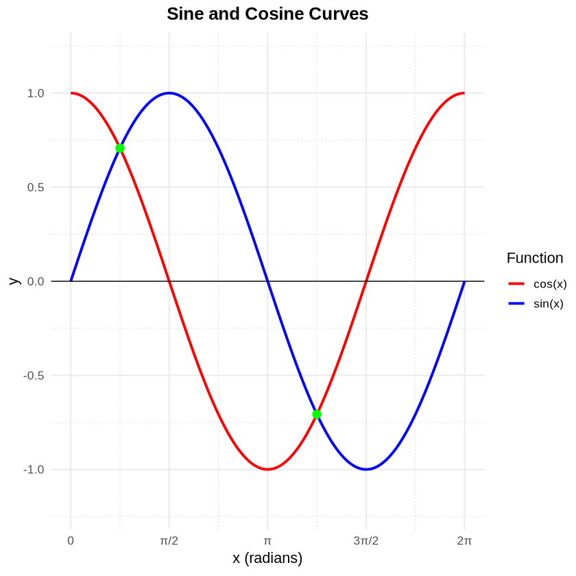

R Kernel Spec Demonstration
JupyterLab is not restricted to Python alone. Architecturally, the Jupyter framework natively supports a wide variety of programming languages through language-specific kernel specifications and runtimes.
By extending this language-agnostic execution model to the Jupyter MCP capability, JupyDeep enables seamless multi-language workflows. Users can now harness the full power of JupyDeep for data science with unparalleled flexibility, efficiency, and intelligence across diverse runtime environments.
In this section, we demonstrate how to leverage this capability to run an R kernel in JupyterLab using JupyDeep.
To get started, we need to set up the appropriate environment. We will use Pixi as our environment manager—please make sure it is installed on your system before proceeding. Afterward, you can clone the example repository - Misc_RKernel - from the JupyDeep Gallery.
Next, navigate into the cloned directory and start the environment by running:
git clone https://github.com/yezhenqing/jupydeep-gallery.git
cd ./jupydeep-gallery/Misc_RKernel
pixi install
pixi run jupyter lab --ip=0.0.0.0
Once executed, you will have a ready-to-go JupyterLab environment with both the R kernel and JupyDeep pre-installed. If you don’t see Agents appear, please try refreshing the web page or restarting the Jupyter server.
Create a new R Notebook plotting sine and cosine curves with tidyverse (do not overwrite existing notebooks).
Paste the prompt above into the chat input box. The content below demonstrates the subsequent output generated by JupyDeep via WuKong agent with z-ai/glm-5.2 LLM model. For the complete example and additional files, please refer to this case in the JupyDeep Gallery.
Brilliant! Enjoy your data science journey with both R and Python in JupyDeep!
Sine and Cosine Curves in R
This notebook plots sine and cosine curves using the tidyverse ecosystem in R, leveraging tibble, dplyr, and ggplot2.
The mathematical functions plotted are:
[1]:
# Install tidyverse if not already installed
if (!requireNamespace("tidyverse", quietly = TRUE)) {
install.packages("tidyverse", repos = "https://cloud.r-project.org")
}
# Load tidyverse
library(tidyverse)
cat("tidyverse loaded successfully.\n")
cat("R version:", R.version.string, "\n")
── Attaching core tidyverse packages ───────────────────────────────────────────────────────────────────────────────────────────────────────────────────────────────────────────────────────────────────────── tidyverse 2.0.0 ──
✔ dplyr 1.2.1 ✔ readr 2.2.0
✔ forcats 1.0.1 ✔ stringr 1.6.0
✔ ggplot2 4.0.3 ✔ tibble 3.3.1
✔ lubridate 1.9.5 ✔ tidyr 1.3.2
✔ purrr 1.2.2
── Conflicts ─────────────────────────────────────────────────────────────────────────────────────────────────────────────────────────────────────────────────────────────────────────────────────────── tidyverse_conflicts() ──
✖ dplyr::filter() masks stats::filter()
✖ dplyr::lag() masks stats::lag()
ℹ Use the conflicted package (<http://conflicted.r-lib.org/>) to force all conflicts to become errors
tidyverse loaded successfully.
R version: R version 4.5.3 (2026-03-11)
[2]:
# Generate x values from 0 to 2*pi (1000 points for smooth curves)
# Use tibble and dplyr to build a tidy dataset
data <- tibble(
x = seq(0, 2 * pi, length.out = 1000)
) |>
mutate(
sin_x = sin(x),
cos_x = cos(x)
)
# Pivot into long format for easy ggplotting with color aesthetics
data_long <- data |>
pivot_longer(
cols = c(sin_x, cos_x),
names_to = "function",
values_to = "y"
) |>
mutate(`function` = recode(`function`,
sin_x = "sin(x)",
cos_x = "cos(x)"
))
# Preview the data
cat("Wide format:\n")
print(head(data))
cat("\nLong format:\n")
print(head(data_long))
cat("\nSummary ranges:\n")
data |>
summarise(
x_min = min(x), x_max = max(x),
sin_range = paste(round(min(sin_x), 4), "to", round(max(sin_x), 4)),
cos_range = paste(round(min(cos_x), 4), "to", round(max(cos_x), 4))
) |>
print()
Wide format:
# A tibble: 6 × 3
x sin_x cos_x
<dbl> <dbl> <dbl>
1 0 0 1
2 0.00629 0.00629 1.000
3 0.0126 0.0126 1.000
4 0.0189 0.0189 1.000
5 0.0252 0.0252 1.000
6 0.0314 0.0314 1.000
Long format:
# A tibble: 6 × 3
x `function` y
<dbl> <chr> <dbl>
1 0 sin(x) 0
2 0 cos(x) 1
3 0.00629 sin(x) 0.00629
4 0.00629 cos(x) 1.000
5 0.0126 sin(x) 0.0126
6 0.0126 cos(x) 1.000
Summary ranges:
# A tibble: 1 × 4
x_min x_max sin_range cos_range
<dbl> <dbl> <chr> <chr>
1 0 6.28 -1 to 1 -1 to 1
[3]:
# Define nice pi-based break labels
pi_breaks <- c(0, pi / 2, pi, 3 * pi / 2, 2 * pi)
pi_labels <- c("0", "π/2", "π", "3π/2", "2π")
# Plot sine and cosine curves with ggplot2
ggplot(data_long, aes(x = x, y = y, color = `function`)) +
geom_line(linewidth = 1.1) +
# Highlight intersection points (sin(x) == cos(x) at π/4 and 5π/4)
geom_point(
data = tibble(
x = c(pi / 4, 5 * pi / 4),
y = c(sin(pi / 4), sin(5 * pi / 4)),
`function` = "intersection"
),
aes(color = NULL),
color = "green",
size = 3,
shape = 19
) +
scale_color_manual(
name = "Function",
values = c("sin(x)" = "blue", "cos(x)" = "red")
) +
scale_x_continuous(breaks = pi_breaks, labels = pi_labels) +
scale_y_continuous(limits = c(-1.2, 1.2)) +
labs(
title = "Sine and Cosine Curves",
x = "x (radians)",
y = "y"
) +
geom_hline(yintercept = 0, color = "black", linewidth = 0.4) +
theme_minimal(base_size = 13) +
theme(
plot.title = element_text(face = "bold", hjust = 0.5),
panel.grid.minor = element_line(linetype = "dotted", color = "grey80")
)

[ ]: